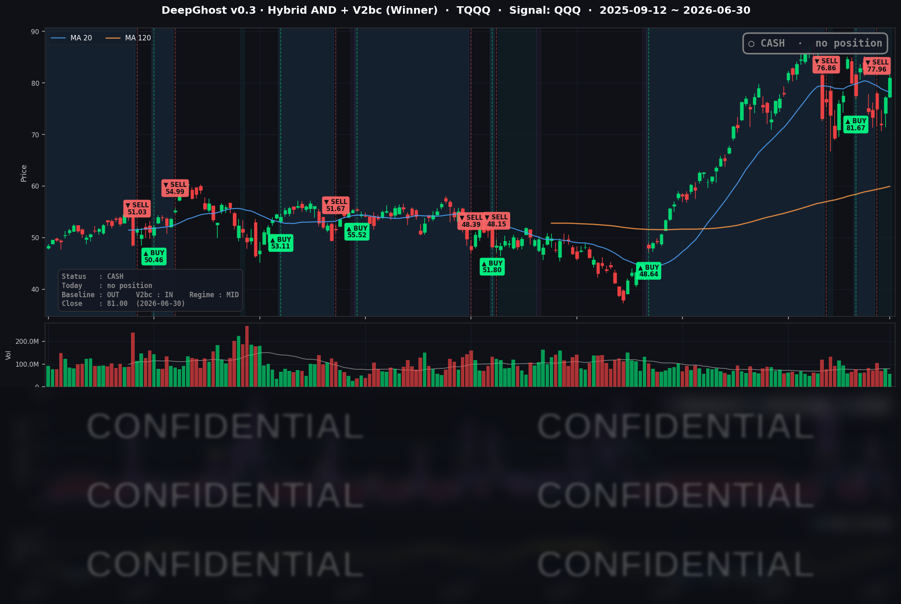

모든 악재가 진정되고 시장이 다시 상승하기 시작했습니다. 다만, 금리 인상 압박 이슈가 남아 있고, 호르무즈 해협 상황은 아직 불안합니다. Ghost.AI 모델 시그널 중 Choppness라는게 있습니다. 이 지표는 현재 상승장이 아니고 횡보장이라고 판단하고 있습니다. 즉, 조금 오른 다음에 떨어질 가능성이 크다고 판단하는거죠. 지켜봐야겠습니다.
📊 오늘의 매매 신호
| 항목 | 내용 |
|---|---|
| 오늘 할 일 | ✅ 아무것도 안 해도 됩니다 |
| 포지션 상태 | 💵 현금 보유 중 (OUT OF POSITION) |
| 현금 보유 기간 | 2026-06-25 ~ 2026-06-30 (4거래일) |
| TQQQ 종가 | $81.00 (+4.94%) |
6/25 시초가에 TQQQ를 정리해 현금으로 전환한 이후, 새로운 매수·매도 신호 없이 관망을 이어가고 있습니다.
TQQQ 시그널 — OUT OF POSITION
현재 상태: 현금 보유 중 | 신규 매수·매도 신호 없음

이틀 연속 상승장입니다. 어제(6/29) 나스닥100을 추종하는 QQQ가 +2.49% 급등한 데 이어, 오늘(6/30)도 +1.70% 오르며 2분기를 기술주 강세로 마감했습니다. 3배 레버리지 상품인 TQQQ는 오늘만 +4.94% 상승했습니다.
그런데도 Ghost.AI 전략은 매수에 나서지 않고 현금을 들고 있습니다. 핵심은 한 문장입니다. 전략은 가격을 추격하지 않습니다. 어제 급등 직후에는 모델 내부 지표가 "진입을 고려할 만한 영역"까지 깊게 들어왔지만, 오늘은 상승 폭이 절반으로 줄면서 그 추진력도 함께 잦아들었습니다. 진입 조건이 막혀 있는 것은 아니지만, 한 번 더 확인이 필요한 구간이라는 뜻입니다.
표현을 바꾸면, "지금 안 사는 것"이 아니라 "한 번 더 확인하는 중"입니다. 그리고 그 확인 신호가 채워질지 여부는 이번 주 후반 고용지표 결과에서 갈릴 가능성이 큽니다. 추세가 다시 또렷해지면 전략은 다음 거래일 시초가에 진입하는 방식으로 매수 신호를 낼 것입니다.
오늘 미국 시장 — 시황 요약
지수 마감
| 지수 | 종가 | 등락률 |
|---|---|---|
| S&P 500 | 7,499.36 | +0.79% |
| 나스닥 종합 | 26,213.72 | +1.52% |
| 다우존스 | 52,319.20 | +0.26% |
| 러셀 2000 | 3,024.37 | +0.46% |
2026년 2분기 마지막 거래일을 기술주 강세로 마감했습니다. 나스닥(+1.52%)이 대형주 랠리를 이끈 반면, 다우(+0.26%)는 소폭 상승에 그쳐 빅테크와 경기방어·가치주 사이의 차별화가 뚜렷했습니다. 6월 중반 메가캡이 한때 약 -8% 조정을 받았던 점을 감안하면, 월말 며칠간의 강한 반등은 낙폭 회복 성격이 짙습니다. 분기 전체로는 2020년 이후 가장 좋은 성과였고, 다우는 이틀 연속 사상 최고치를 새로 썼습니다.
국채 금리 동향
| 만기 | 수익률 | 전일 대비 |
|---|---|---|
| 3개월 | 3.732% | -0.8bp |
| 5년 | 4.186% | +4.6bp |
| 10년 | 4.418% | +3.8bp |
| 30년 | 4.902% | +4.2bp |
단기물(3개월)은 거의 움직이지 않은 반면 중·장기물이 일제히 4bp 안팎 올라, 곡선이 미세하게 가팔라졌습니다(베어 스티프닝). 10년물-3개월물 스프레드는 +68.6bp로 정상적인 우상향 곡선을 유지해 경기 침체 신호는 없습니다. 단기 정책금리 기대가 고정된 가운데 장기물만 오른 것은 "고금리 장기화 + 완만한 성장" 시나리오에 부합합니다. 금리가 소폭 올랐어도 위험선호가 듀레이션 부담을 눌렀다는 점이 오늘의 특징입니다.
연준 발언 & 금리 패스
6/30 당일에는 새로운 연설 이벤트가 없어, 시장은 직전 6/17 FOMC 기조 안에서 안정화된 흐름이었습니다. 6월 회의에서 정책금리는 3.50~3.75%로 동결됐지만, 점도표가 매파적으로 전환된 점이 핵심입니다. 2026년 말 금리 중앙값 전망이 3월의 3.4%에서 3.8%로 올라갔고, 참가자 19명 중 9명이 연내 최소 1회 인상을 내다봤습니다. "인하 사이클" 내러티브가 후퇴하고 "현 수준 장기 유지, 인상 가능성 상존"으로 무게중심이 옮겨간 모습이며, 중장기 금리 상승도 이 기조와 맞물려 있습니다.
오늘의 핵심 이슈
- 기술주 주도 반등으로 2분기 마감. 6월 중반의 조정을 딛고 월말에 강하게 회복했고, 분기 성과로는 2020년 이후 최고 수준입니다.
- 곡선 베어 스티프닝. 단기물은 고정된 채 중장기물만 4bp 안팎 올랐습니다. 매파적 점도표와 끈적한 물가의 잔상이지만, 위험선호가 이를 압도했습니다.
- 심리와 가격의 괴리. 지수는 오르고 변동성은 급락했는데, 공포탐욕지수는 여전히 공포 영역에 머물러 있습니다. 가격은 위험선호로 빠르게 넘어갔지만 투자자 심리는 아직 경계심을 못 버린 과도기입니다.
변동성 & 투자심리
- VIX(변동성 지수): 16.45, 전일 대비 -6.80%. 5거래일 만에 18.63에서 16.45로 내려오며 변동성이 빠르게 진정됐습니다. 위험선호 회복을 가장 또렷하게 보여주는 지표입니다.
- 공포탐욕지수: 27(공포). 가격·변동성과는 방향이 엇갈립니다. 최근 낙폭에 대한 경계심이 심리지표에 여전히 남아 있는 셈입니다.
가격·변동성 기준으로는 낙관으로 전환 중이지만, 심리지표상으로는 아직 경계가 남은 혼재 상태입니다. 비관이 과한 만큼 추가 반등 여지를 시사하는 역발상 포인트로 읽을 수도 있고, 반대로 심리가 빠르게 돌아서면 변동성이 다시 커질 수 있는 양면성을 안고 있습니다.
매크로 & 원자재
- WTI 유가: $69.94 (-1.14%) — 70달러선에서 약보합.
- Brent 유가: $73.35 (+0.27%).
- 금: $4,025.50 (+0.08%) — 4,000달러대에서 보합.
원자재는 위험선호를 방해하지 않는 잔잔한 흐름이었습니다. 다만 물가(PCE 전년비 약 3.5%)가 목표(2%)를 웃돌고 있고, 에너지·지정학 변수가 단기 인플레이션 가속 우려로 깔려 있다는 점은 염두에 둘 부분입니다.
주요 종목 동향
| 종목 | 전일 종가 | 당일 종가 | 등락률 | 비고 |
|---|---|---|---|---|
| AAPL | 281.74 | 289.36 | +2.70% | 가격 인상 발 급락 이후 회복 랠리 |
| NVDA | 194.97 | 200.09 | +2.63% | 200달러 회복, 반도체 반등 동참 |
| MSFT | 368.57 | 373.02 | +1.21% | 대형 기술주 반등 동참 |
| GOOGL | 353.65 | 357.37 | +1.05% | 커뮤니케이션 서비스 강세 수혜 |
| META | 562.60 | 563.29 | +0.12% | 보합권, 강세 섹터 대비 소외 |
| AMZN | 240.14 | 238.34 | -0.75% | 경기소비재 강세에도 드물게 하락 |
| TSLA | 411.84 | 420.60 | +2.13% | 경기소비재 강세 + 위험선호 수혜 |
| NFLX | 73.78 | 71.40 | -3.23% | 스트리밍 경쟁 심화로 구조적 약세 지속 |
| AVGO | 372.45 | 377.75 | +1.42% | 반도체 회복 동참 |
| QCOM | 188.72 | 184.79 | -2.08% | 반도체 강세에도 역행, 개별 약세 |
| INTC | 131.72 | 139.63 | +6.01% | 목표가 상향 촉매로 커버리지 최대 상승 |
| MU | 1,145.28 | 1,154.29 | +0.79% | 메모리 강세 지속, 고가권 보합 |
오늘 반등의 주인공은 인텔(+6.01%)이었습니다. AI 인프라 사이클을 근거로 한 목표가 상향이 촉매로 작용했습니다. 엔비디아는 200달러를 회복했고, 애플은 가격 인상 충격에서 벗어나 회복 랠리를 보였습니다. 반대로 넷플릭스는 -3.23%로 약세가 이어졌는데, 스트리밍 경쟁 심화라는 구조적 부담이 6월 내내 주가를 누르고 있습니다.
Ghost.AI — Quantitative AI Investment
Model: DeepGhost v0.3 | Transformer-Based Deep Learning
Coverage: 13 tickers | Updated every trading day after US market close
⚠️ 본 자료는 정보 제공 목적으로만 작성되었으며 투자 권유가 아닙니다. 모든 투자의 책임은 투자자 본인에게 있습니다. 과거 성과가 미래 수익을 보장하지 않습니다.
[유의사항]
- 본 서비스는 불특정 다수를 대상으로 발행되는 단방향 정보 제공 서비스이며, 투자자 개인의 재산 상황·투자 목적·위험 선호도를 반영한 개별 투자 조언이 아닙니다.
- 고스트에이아이 주식회사는 고객과 쌍방향 의사소통(개별 상담, 맞춤형 자문 등)을 제공하지 않습니다.
- 본 콘텐츠는 투자 권유 또는 매매 주문의 청약·청약의 권유에 해당하지 않으며, 최종 투자 판단 및 그에 따른 손익의 책임은 전적으로 투자자 본인에게 있습니다.
고스트에이아이 주식회사